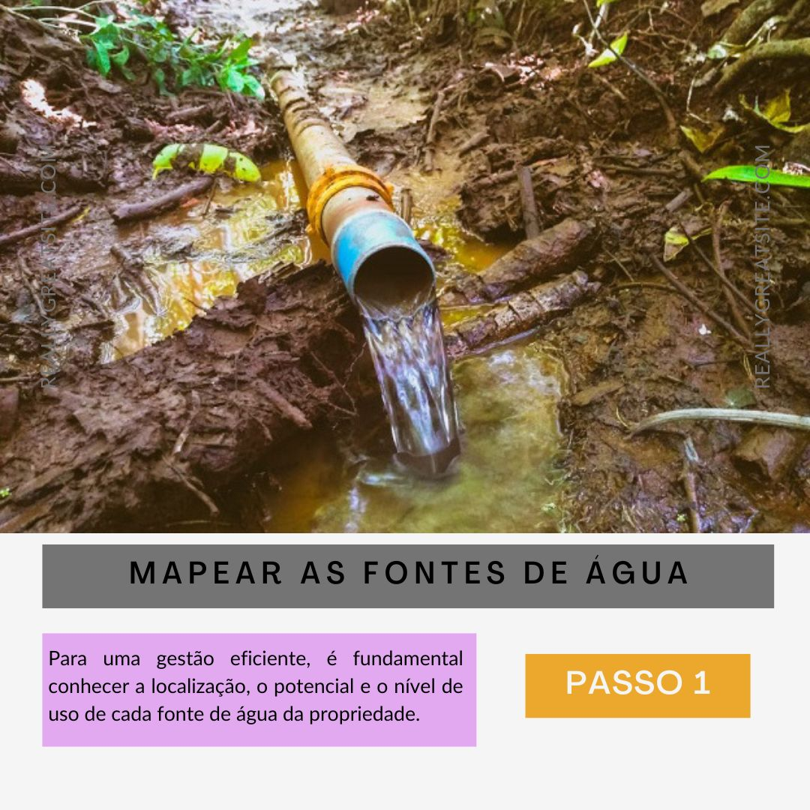
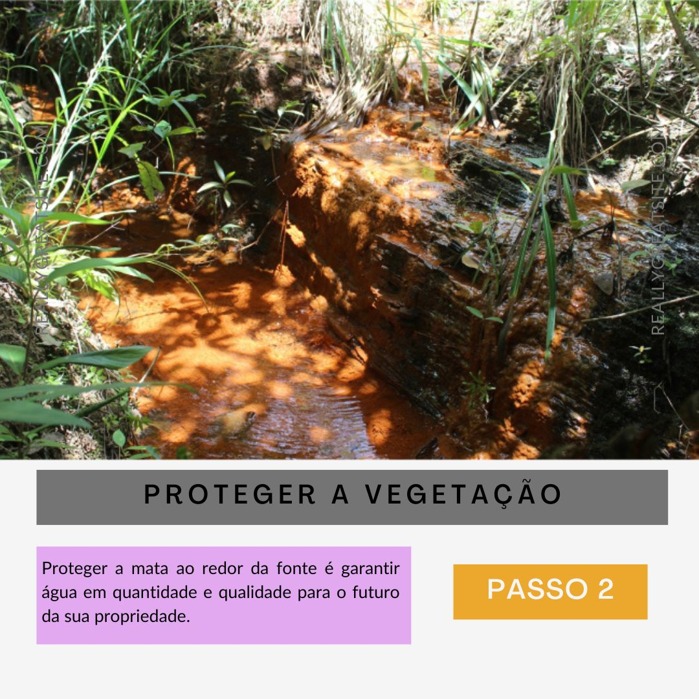
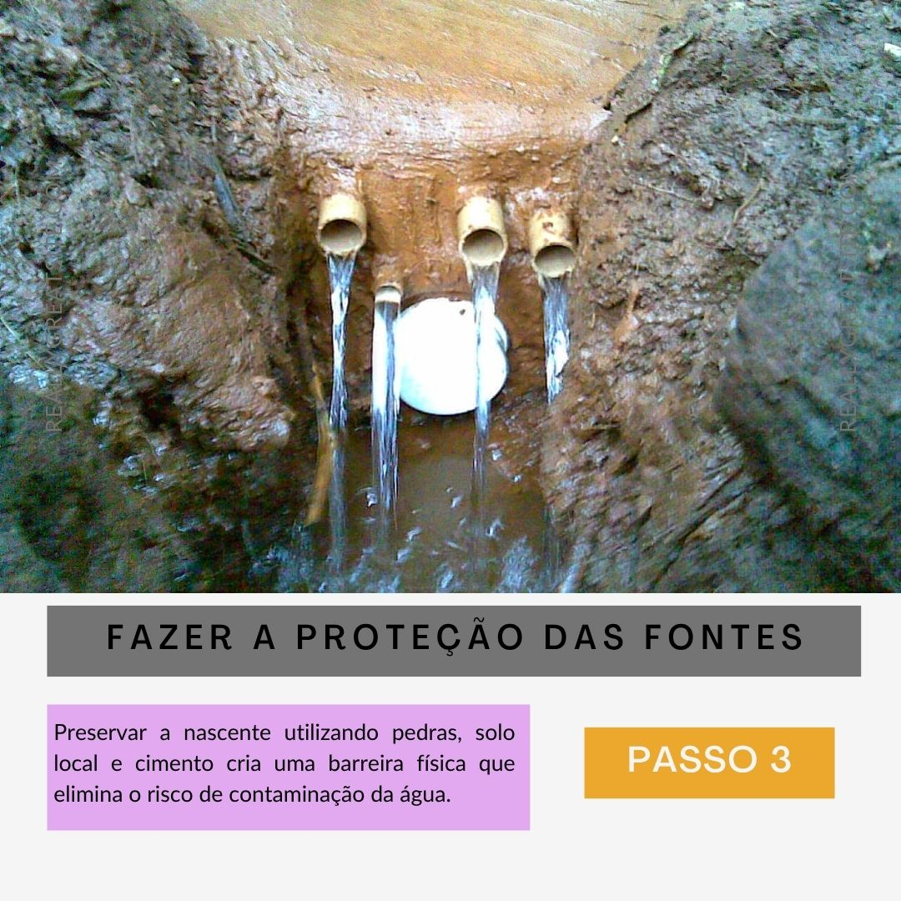

AgroTech 🌱Os Pias que produzem e preservam
Esta página é do movimento de jovens do campo chamado AgroTech, que busca conciliar produtividade e preservação da natureza. A principal paixão do movimento são as nascentes, pilares que sustentam a nossa produção e a vida no planeta, servindo como base para o sucesso no campo ao alimentar os recursos necessários para o desenvolvimento das nossas culturas e garantir a resiliência das comunidades rurais e da fauna ao redor de nossas propriedades.
O AgroTech acredita que é possível aliar a produtividade à preservação ambiental. Proteger as nascentes é um investimento estratégico para o futuro do nosso setor, assegurando a disponibilidade de água de qualidade para a irrigação, para o consumo humano e para manter o equilíbrio dos ecossistemas. O manejo consciente da terra e o respeito aos recursos hídricos reforçam a sustentabilidade do agronegócio frente aos desafios climáticos.
Para garantir a perenidade dessas fontes vitais, o movimento defende a implementação de práticas responsáveis nas propriedades. Conforme o compromisso coletivo assumido, três passos são fundamentais para a proteção das nascentes nas grandes e pequenas propriedades, conforme pode ser observado nas imagens.



Três principais crenças do movimento
Cuidar da água hoje é o que garante que a terra continue gerando lucro e valor no futuro. Além de valorizar o preço da propriedade, essa prática abre portas em mercados que exigem produtos responsáveis e reduz custos com tratamentos desnecessários. É garantir que o negócio da família se mantenha lucrativo e pronto para os novos desafios.
Ter água limpa e abundante é ter a maior riqueza que um terreno pode oferecer, valendo muito mais do que qualquer equipamento ou estrutura. Sem esse recurso, não existe produção nem crescimento, tornando a gestão hídrica o coração de qualquer fazenda de sucesso. É o ativo principal que mantém o negócio vivo e garantido para os próximos anos.
Quando o campo é bem gerido, a tecnologia e a natureza caminham juntas para elevar os resultados. Práticas modernas não apenas aumentam a colheita, mas protegem o ecossistema que permite a produção continuar existindo. O respeito ao meio ambiente potencializa o lucro e garante que o solo permaneça sempre fértil e produtivo.
Deixe aqui seu comentário